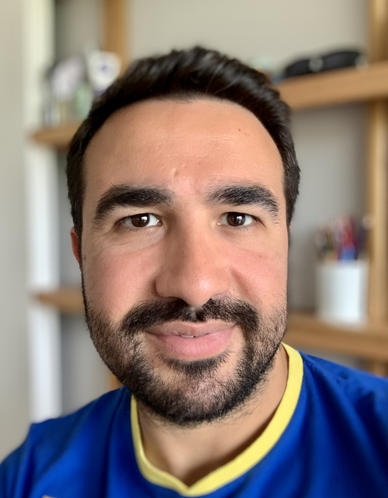

Mehmet Fatih Karamustafaoglu

Summary
I am looking for a new story in my career and my life. My previous expreience is in medicine, and now, my goal is
to be a talented web developer.
Education
- Bachelor Degree in Faculty of Medicine, Erciyes University, Kayseri-TURKEY, 2009
- Specialty Training in Internal Medicine, Erciyes University, Kayseri-TURKEY, 2014
Experience
Internal Medicine Resident
Faculty of Medicine, Erciyes University, Kayseri-TURKEY
July 2010-December 2014
Internal Medicine Specialist - Inpatient & Outpatient Clinic
Sındırgı Devlet Hastanesi, Balıkesir-TURKEY
January 2015- November 2017
Internal Medicine Specialist - Oncology Registrar
Bahrain Oncology Center-King Hamad University Hospital, BAHRAIN
November 2017- October 2021
Internal Medicine Specialist - Oncology Inpatients
IEU Medicalpoint İzmir Hospital, İzmir-TURKEY
November 2021-November 2022
Internal Medicine Specialist - Outpatient Clinic
Private Metropol Medical Center, İzmir-TURKEY
November 2022-March 2023
During my 14-year-experience,
- Evaluated and treated over 60 patients per day
- Performed a great number of,
- minor procedures (urinary catheter insertion, nasogastric tube insertion)
- bedside paracentesis
- central line insertion
- Followed-up oncology patients
Skills
- Customer Service: ⭐️⭐️⭐️⭐️
- Communication: ⭐️⭐️⭐️⭐️
- Teamwork: ⭐️⭐️⭐️⭐️⭐️
Courses and Certifications:
- Occupational Health and Safety Course, January 2015
- Cardiopulmonary Resuscitation Course, March 2015
- Infectious Disease Control, April 2015
- Cardiopulmonary Resuscitation Course, June 2016
- Cardiopulmonary Resuscitation Course, March 2017
- Basic Life Support Training, June 2018
- Basic Life Support Renewal, February 2020
Other
© Mehmet Fatih Karamustafaoglu. All rights reserved.